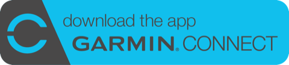

体調に合わせて変わるプラン。
何のために走るのか、今どのくらい走れるのかを RaceWise に伝えてください。レース当日まで毎週のメニューを組み、疲れたとき、痛むとき、忙しいときはプランを組み直します。
Android 版も近日公開予定です。

新機能 シューズの走行距離とランニングフォームの推移 · 近日公開：ウォーキングプランと寒さ対策のアドバイス →
あなたに合わせて変わる1週間
ハーフマラソンプランのある1週間です。実際の1週間に起こりそうなことを試してみてください。
- 月休息
- 火インターバル6 × 800 mインターバル移動済み
忙しい日なので、木曜日に移動しました。
- 水イージーラン6 kmイージーラン
6 km4 km今朝の HRV が低かったので、今日は短めにします。
- 木休息インターバル6 × 800 m
きつい日が2日続かないよう、ここに移動しました。
- 金筋力トレーニング25分
- 土ロング走16 km
ステップごとのメニューを Apple Watch に送信。iPhone のみ
- 日休息スイム1.5 km イージー
ひとつのプランで複数スポーツ。Pro
無料版はお試し版ではなく、本格的なプランです。 ひとつのスポーツ、すべての安全チェック、Apple Watch のメニューが、期間の制限なく使えます。 無料版と Pro を比べる
RaceWise の使用イメージ
今のあなたからスタート
ランニングを始めたい人
「はじめての5K」を選んでください。最初は1回1分のランから始め、週ごとに少しずつ伸ばしていきます。節目はすべて記録されます。いつ走るか決めていなくても、RaceWise が日程を提案します。
すでにトレーニング中の人
確認済みの数百の大会からレースを選ぶか、自分で日付を決めて、今日から、または最大4週間後からスタートできます。エントリー済みのレースはすべて追加できます。先に行われるレースは調整レースになります。ペース、心拍数、パワー、体感のどれでもトレーニングできます。
- ランニング
- 水泳
- サイクリング
- ローイング
- ハイキング
変わったことを、ひとことで伝えるだけ
木曜日は出張？明日のランを別の日にしたい？文字で入力するか、キーボードのマイクや Siri で話しかけてください。RaceWise が変更内容を考え、保存する前にすべて見せてくれます。プランが安全でなくなるような変更は適用されません。
旅行に行くなら、日程を追加するだけでプランがそれに合わせて調整され、戻ってきた後は軽めの日から再開します。今週は2日しか空いていない？その日を選べば、どのメニューが移動し、どれがなくなるかがわかります。
木曜と金曜は仕事で出張です。
理解した内容
- 木 テンポ走を土曜日に移動
- 金 イージーランはスキップ
- 日 ロング走は予定どおり
例です。変更は保存する前に確認できます。
レース当日も、計画どおりに
目標ペース、朝食、水分補給の計画は無料。Pro では1 kmごとのスプリットと、レースを3つに分けた作戦が加わります。
- 1–7 km5:40
- 8 kmジェル
- 8–16 km5:35
- 15 kmジェル
- 17–21.1 km5:30
坂の多いレース？ コースの獲得標高を入力すると、強化期に坂道インターバルと起伏のあるロング走が加わります。近くに坂がなくても、代わりに何をすればいいかを教えてくれます。
本格的な山行？ 獲得標高100 mごとに1 km分として計算します。ザックは数週間ごとに少しずつ重くなり、最後の数週間には下り坂の練習が入ります。
1回ごとのランだけでなく、あなたの走りを知る
ランニングフォーム。Pro ケイデンス、ストライド、接地時間、上下動の数か月の推移を、Apple Watch（Series 6 以降）から記録します。いつもより接地時間が長くなったり、ケイデンスが落ちたりすると、RaceWise がお知らせします。脚が疲れているサインであることが多いからです。
シューズの走行距離。Pro リストからシューズを選ぶと、ランのたびに正しい1足に距離が加算されます。ほとんどのランニングシューズの寿命は500–800 km。設定した距離に達するとお知らせします。
筋トレとストレッチを3Dで
スポーツごとの短いメニューに、器具なしでできる30種類以上の動き。動きをタップすると3Dのフィギュアがやり方を見せてくれ、ドラッグで向きを変えられます。片側ずつの動きは左右両方で行います。Pro では、タイマーがセット数と休憩をカウントし（ロック画面にも表示）、きついランの前にはウォームアップドリル、後にはストレッチがつきます。
出かける前に
天気をオンにすると、RaceWise がトレーニング場所の暑さを確認し、どのくらいペースを落とせばいいかを伝えます。レースの10日前からは、レース当日の天気予報を表示します。天気データは Apple 天気から取得しています。
メニューに合ったルート。Pro 今いる場所からちょうどいい長さのルートを提案。Google マップや Apple マップでたどれます。
数字を変えられないコーチ
コーチのメモは、iPhone 上で Apple Intelligence™ が書くので、入力した内容はスマートフォンの外に出ません。ペース、距離、日付はプランから取られます。プランにない数字がメモに含まれていた場合は、代わりにシンプルな要約が表示されます。
今日は 7.5 km のイージーランを 5:46–6:21 /km で。会話できるくらいのペースで走りましょう。1月17日に向けた土台づくりです。
ゆっくり、着実に増やす
すべてのプランは安全チェックを通過します。週の練習量の増加は最大10%まで。初心者、年齢の高いアスリート、ケガから復帰する人はさらにゆるやかです。同じ種類のメニューのあとに痛みが続くようなら、より負担の少ないメニューを提案します。胸の痛み、動悸、骨の鋭い痛みがあるときは、すぐに中止して受診してください。
基礎期強化期テーパー期
アプリにはほかにも
- 音声ガイドiPhone をポケットに入れたまま、RaceWise が各ステップを案内し、ペースを伝えます。
- ランのあとにプランと比べてどうだったかを、ひとことふたことで。
- 進捗スポーツごとのグラフと、実際の結果から出すランニング体力スコア。
- ゴールのあとに回復のアドバイス。それから次のレースを計画するか、体力を維持するか、休むかを選べます。
- Siri に聞くiPhone のみ今日のメニュー、体調チェック、ワークアウトの記録を声で。
- シェアゼッケンやメダルなどのカードとステッカー。
- ロック画面Proガイド付きのラン、エクササイズタイマー、レース当日朝のカウントダウン。ホーム画面のウィジェットも。
- ポスターからレースを追加Pro大会ポスターを撮影すると、RaceWise が詳細を入力します。
- コントロールセンターiPhone のみワークアウトの記録、体調チェック、今日のメニューの確認がワンタップで。
メニューを Garmin にiPhone 版 Pro
Garmin Connect™ アプリと接続すると、翌週のランニング、サイクリング、水泳、筋力トレーニングのメニューが、ペースと心拍数の目標つきで Garmin のカレンダーに送られます。完了した Garmin のアクティビティは RaceWise に戻り、プランが調整されます。Android 版（近日公開）では、当面この機能を無料で使えます。

新着情報
近日公開
- 寒さ・風・路面凍結のアドバイス
- 大気の状態と花粉
- 海外レースの時差と暑さ
- ウォッチで1 kmごとのラップ
- ウォーキングプラン
- ランごとのランニングフォームPro
- スペイン語とフランス語
最新のアップデート
- シューズの走行距離Pro
- ランニングフォームの推移Pro
- マイル単位のプラン
- ウォッチで記録したレースでペースを更新
無料版と Pro
Pro はトレーニングをもっと手軽にします。安全に関わる機能はすべて無料です。
無料
- ひとつのスポーツの本格的なプラン：レース、目標、または習慣づくり
- 毎日の体調チェックと、痛みや回復に合わせた調整
- 暑さのアドバイスとレース当日の天気予報
- ステップごとの Apple Watch メニューiPhone のみ
- コーチのメモと音声ガイド
- 3Dフィギュアつきの筋トレとストレッチ
- トレンドとランニング体力スコア
- レース当日の目標ペースと補給
- ひとことでプラン変更、旅行や忙しい週にも対応
RaceWise Pro
- ひとつのプランで複数スポーツ
- Garmin Connect と双方向で連携
- スプリットつきのレース当日プラン
- メニューに合ったルート
- ロック画面とウィジェット
- エクササイズタイマー
- プランについて質問、写真からレースを追加
- ウォームアップドリルとクールダウンのストレッチ
- ランニングフォームの推移
- シューズの走行距離
- ルートのステッカー
Pro は月額または年額のサブスクリプションで、最初の14日間は無料です。価格は App Store に表示されます。Apple アカウントの設定からいつでも解約できます。Android 版の RaceWise Pro も近日公開予定です。
RaceWise を入手
ひとつのスポーツなら無料、期間の制限もありません。


あなたのトレーニングは、あなたのもの。
アカウント不要、広告なし、アクセス解析なし。プランはあなたの iPhone とあなた自身の iCloud にだけ保存され、売られたり共有されたりすることはありません。小さなサーバーを使うのは、Garmin と接続するときと、フィードバックを送るときだけです。すべてのデータはアプリ内から削除できます。 プライバシーポリシー
ご質問やアイデアは？
racewiseapp@gmail.com までメールするか、アプリの「設定 › ヘルプとプライバシー › フィードバックを送る」からお送りください。
RaceWise が提供するのは一般的なトレーニングのアドバイスであり、医療上の助言ではありません。痛みがあるときは中止し、医師や理学療法士に相談してください。